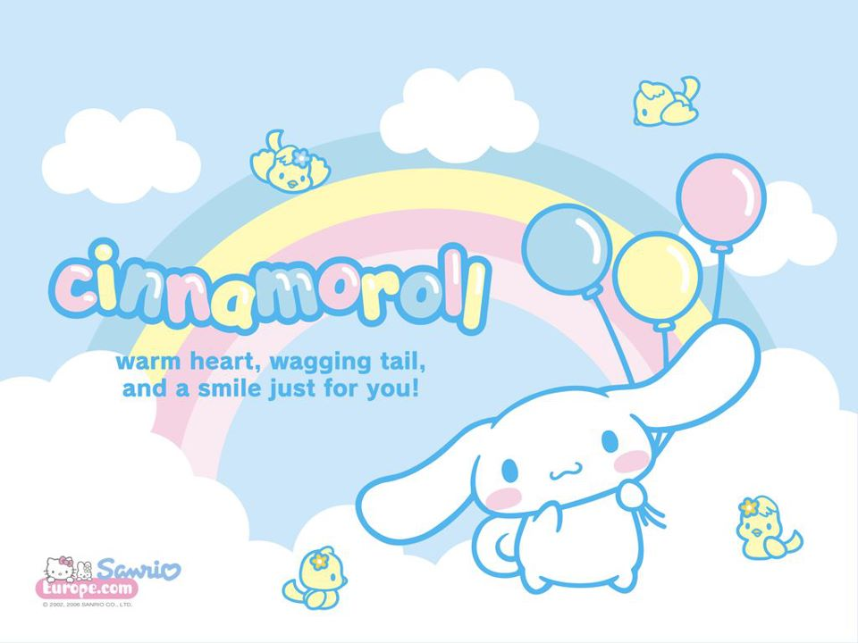

角色介紹
三麗鷗以一隻藍眼白膚色狗為造型的男性卡通形象，其蓬鬆的白色皮毛和長長的耳朵而聞名的玉桂狗 (又名大耳狗喜拿)，於2001年誕生， 生日為2002年3月6日，該角色由人物設計師奧村心雪設計。雖然是較新的角色，但很快成為粉絲的最愛，於2017年2月13日被任命為東京都品川區的觀光大使。 從遙遠天空的白雲上出生的男性白色小，有著像肉桂捲一樣捲捲的尾巴，也所以被取名為「大耳狗喜拿」。
有一天，剛巧在Café Cinnamon咖啡廳被工作的大姊姊發現，就此開始住在一起生活。現在是店裡的狗。特技是用大大的耳朵在空中飛翔。 個性很乖巧，非常喜歡與人相處，有時甚至會趴在客人的膝蓋上睡覺。
